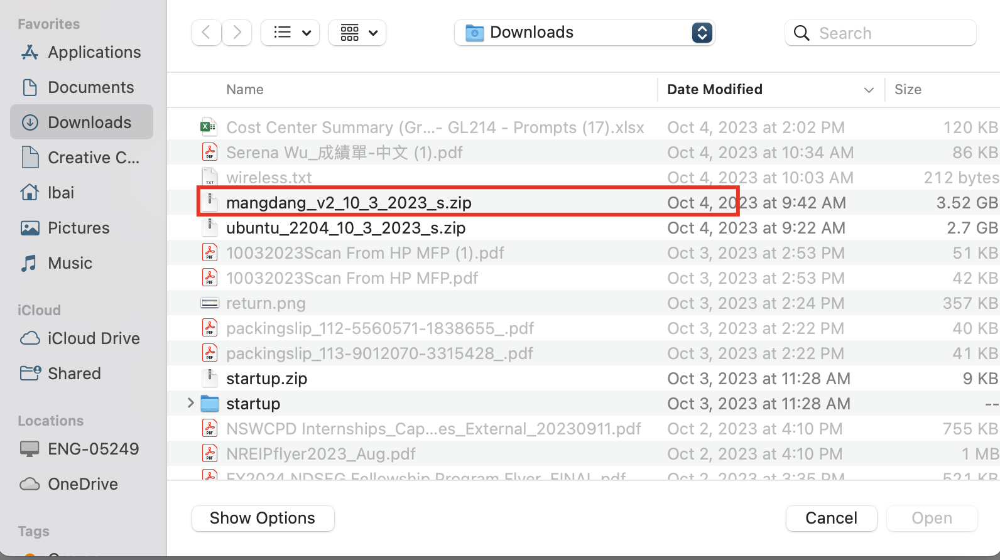
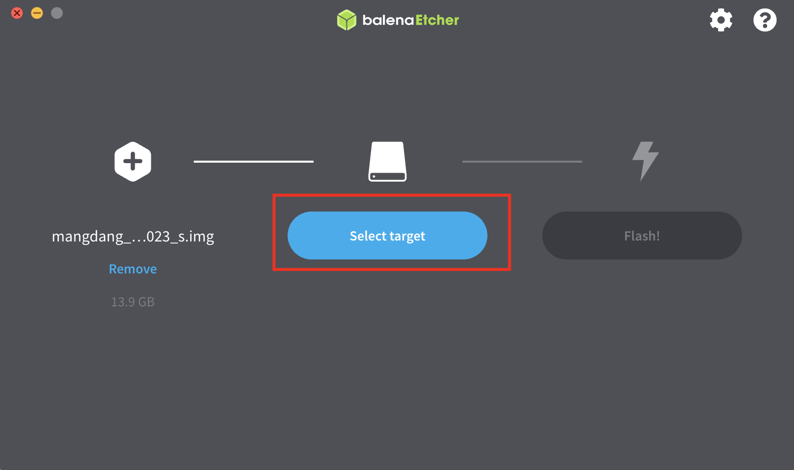
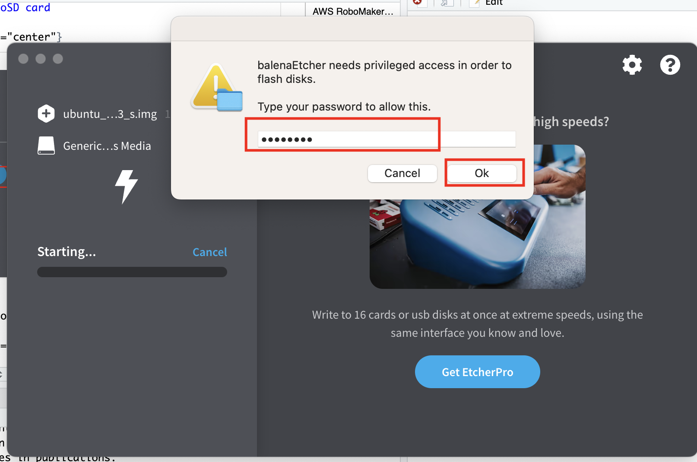
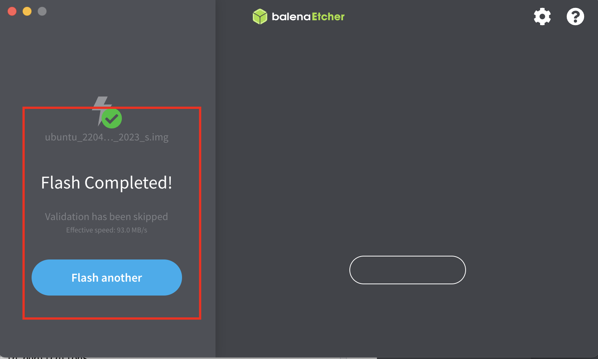
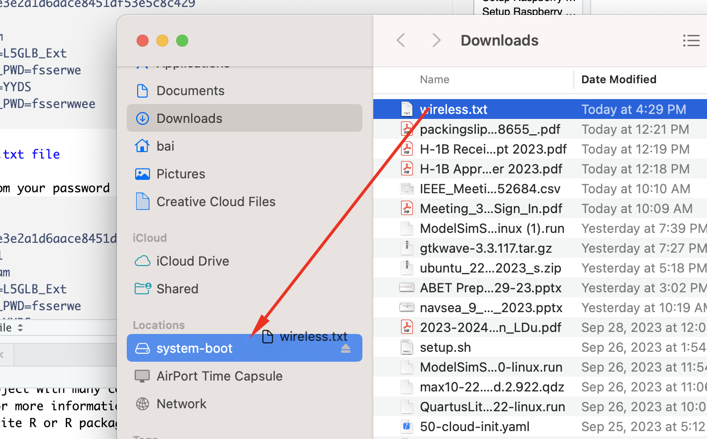

Robot Control using Raspberry Pi
Workshop - A minimal introduction to Minipupper V2
Li Bai ![]()
Temple University
April 6, 2024
Mangdang
A quadruped robot dog originating from a stanford project click here
- A Mangdang v2
- 32GB micro SD cards

- AWS Robomaker and AWS Cloud 9
- Virtualization, Docker, Linux, Python 3
- Robot Operating System (ROS) and Gazebo
- ReInvent Workshop 2022 for Dance Robot (Gan and Hansen 2022)
Setup Raspberry Pi - Balena Etcher (preflashed)
- Download Balena Etcher https://etcher.balena.io/ to copy the new image to your MicroSD card




- Check to ensure your SD card is selected to flash to SDHC, NOT your computer!

NOTE: the following step will not apply to you if you own a computer using Windows





Generating a Password Hash
- Passowrd Hash: cryptographic representation of a password

Copy the wifi password file
- Drag and drop the wireless.txt into
system-bootfolder


Remove miniSD, connect it to Minipupper SD slot

Insert MicroSD Card to Minipupper and Power On
- If the IP address does not show up on first time boot up, wait for power on sound and screen flash, then disconnect power and reconnect
- If you see the IP address on the screen in the second time power on, type
http://[ipaddress]:8080for a web remote control